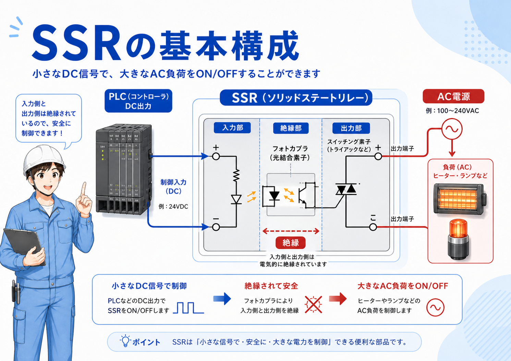
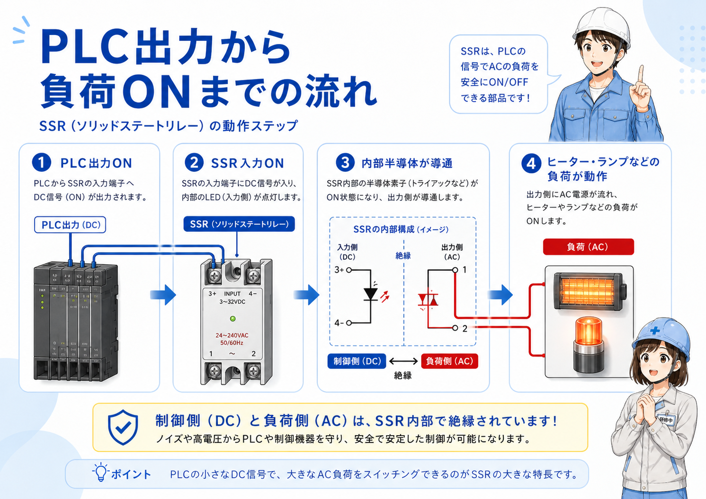
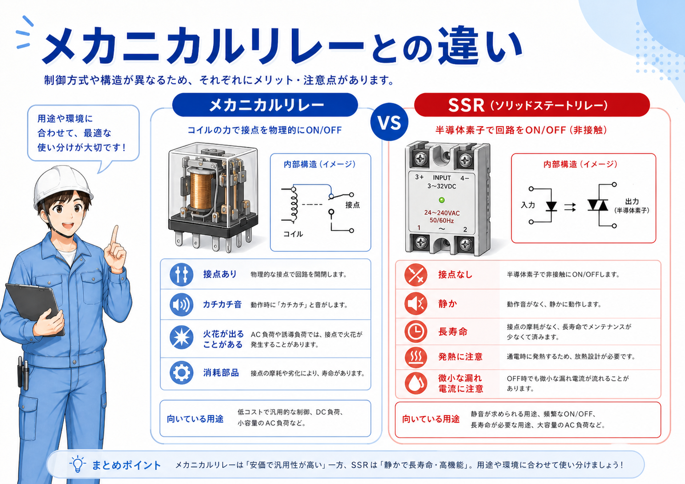

先に結論：リレーは「小さな信号で別の回路を切り替える部品」
リレーは、コイルに電気が入ることで内部の接点が切り替わり、 別の回路をON/OFFするための基本部品です。
押しボタンやPLC出力などの小さな信号を使って、ランプ、ソレノイド、別の制御回路などを切り替えるときに使われます。 制御盤の中では、信号の中継、条件分岐、自己保持、インターロックなどでよく出てきます。
まず覚えるポイント
リレーを見るときは、いきなり端子番号から入るよりも、 「コイルが入る → 接点が切り替わる → 出力側の回路が変わる」 という流れで見ると分かりやすいです。

先輩 リレーは、ざっくり言うと小さな信号で別の回路を切り替える部品だよ。

新人 PLCや押しボタンの信号で、別の回路をON/OFFできるイメージですね。

先輩 そう。特にコイルと接点を分けて見るのが大事だね。
リレーとは？
リレーは、入力側のコイルに電気を流すことで、出力側の接点を切り替える部品です。 コイルと接点が分かれているため、入力側と出力側の回路を分けながら信号を受け渡しできます。
制御盤では、PLCの出力を受けて別の回路を動かしたり、押しボタンの信号を中継したり、 複数の条件を組み合わせるために使われます。

コイル
入力側です。電気が入ると磁力が発生し、接点を動かします。
接点
出力側です。コイルの状態に合わせて回路を開閉します。
入力側
PLC出力、押しボタン、センサー信号などが関係します。
出力側
ランプ、ソレノイド、別の制御回路などをON/OFFします。
現場での見方
リレーを確認するときは、まず「コイルに電気が来ているか」を見ます。 そのうえで「接点側が切り替わっているか」を確認すると、入力側の問題か、リレー本体・接点側の問題かを分けやすくなります。
リレーの基本の動き
リレーの動きは、 コイルOFF → 信号が入る → コイルON → 接点が切り替わる という流れで見ると分かりやすいです。

1. コイルOFF
コイルに電気が入っていない通常状態です。接点は通常位置にあります。
2. 信号が入る
PLCや押しボタンからコイルへ電気が送られます。
3. コイルON
コイルに電流が流れ、磁力が発生します。
4. 接点が切り替わる
a接点・b接点の状態が変わり、出力側の回路が切り替わります。
「リレーが入った」と「接点が使えている」は分けて見る
コイルがONになっていても、接点の接触不良や配線間違いがあると、出力側が期待どおり動かないことがあります。 コイル側と接点側を分けて確認するのが大事です。
a接点・b接点の考え方
リレーを理解するときに大事なのが、a接点とb接点です。 どちらもコイルのON/OFFによって状態が変わりますが、動き方が逆になります。
| 接点 | 通常時 | コイルON時 | 使い方のイメージ |
|---|---|---|---|
| a接点 | 開いている | 閉じる | コイルONで出力をONにしたいときに使う |
| b接点 | 閉じている | 開く | コイルONで出力を切りたいときや、異常時に止めたいときに使う |
a接点は「ONで閉じる」、b接点は「ONで開く」
まずはこの見方で十分です。 図面やラダーを見るときも、コイルがONしたときに接点がどう変わるかを追うと、回路の意味が分かりやすくなります。
新人 a接点とb接点って、いつも混ざりやすいです。
先輩 最初はa接点はONで閉じる、b接点はONで開くで覚えるといいよ。あとは実際の回路で何をON/OFFしたいかを見るんだ。
PLC出力や自己保持回路との関係
PLCの出力で直接大きな負荷を動かすのではなく、PLC出力でリレーのコイルを動かし、 リレー接点で別の回路を切り替えることがあります。
また、自己保持回路では、押しボタンやリレー接点を使って「一度ONした状態を保持する」考え方が出てきます。 リレーのコイルと接点の関係が分かると、自己保持回路やインターロックもかなり追いやすくなります。
PLC出力
リレーのコイルをONする指示役として使われることがあります。
リレー接点
別電源の回路や複数の信号を切り替える中継役になります。
自己保持
ONした状態をリレー接点で保持する考え方につながります。
インターロック
同時に入ってはいけない回路を、接点で止める考え方にもつながります。
ラダーでは「コイル」と「接点」が別の場所に出てくる
ラダー図では、同じリレーのコイルと接点が離れた場所に出てくることがあります。 名称や番号を見て、どのコイルに対応した接点なのかを追うことが大事です。
リレーと電磁接触器の違い
リレーと電磁接触器は、どちらもコイルで接点を動かすという意味では似ています。 ただし、現場では扱う電流や用途が違います。

| 比較項目 | リレー | 電磁接触器 |
|---|---|---|
| 扱う電流 | 小さめ | 大きめ |
| 主な用途 | 信号の切替・中継 | モーターなど主回路の入切 |
| 接点の見方 | 制御回路中心 | 主接点＋補助接点 |
| 現場での確認 | コイルON・接点出力 | コイル電圧・主接点・補助接点 |
小さな信号はリレー、大きな負荷は電磁接触器
ざっくり分けるなら、リレーは制御信号の切替や中継、電磁接触器はモーターなどの主回路を入切する部品として見ると整理しやすいです。
制御盤の中でどう見るか
制御盤の中でリレーを見るときは、リレー本体だけを見るのではなく、 そのリレーが何の信号を受けて、どの回路を切り替えているのかを確認します。
1. コイル側を見る
PLC出力、押しボタン、センサーなど、何の信号でコイルがONするか確認します。
2. 接点側を見る
リレー接点で、どのランプ・ソレノイド・信号をON/OFFしているか確認します。
3. 接点番号を見る
a接点・b接点・共通端子など、実物と図面の対応を確認します。
4. 交換時は仕様を見る
コイル電圧、接点容量、接点構成、端子配列が合っているか確認します。
「どの信号を中継しているか」を追う
リレーは数が増えると、ただの部品の集まりに見えやすいです。 でも1個ずつ「何の入力でコイルが入るか」「どの出力を切り替えるか」を見ると、回路の役割が追いやすくなります。
トラブル時の確認ポイント
「出力が出ない」「ランプが点かない」「ソレノイドが動かない」といったトラブルでは、 リレーのコイル側と接点側を分けて確認すると原因を絞りやすくなります。
- リレーのコイルに指定電圧が来ているか
- コイルがONしたときにリレーが動作しているか
- a接点・b接点が想定どおり切り替わっているか
- 接点側の電源が来ているか
- 接点容量を超える負荷を入れていないか
- 端子のゆるみや配線抜けがないか
- リレー本体の劣化や接点不良がないか
コイルが入っていても、出力が出るとは限らない
リレーのランプが点いていたり、動作音がしていたりしても、接点不良や接点側電源の未供給で出力が出ないことがあります。 コイル側だけで判断せず、接点側も必ず確認します。
交換時はコイル電圧と接点構成を確認
見た目が似ていても、DC24Vコイル、AC100Vコイル、接点数、端子配列、接点容量が違うことがあります。 同じ形に見えても仕様違いがあるため、交換前に型式と仕様を確認します。
まとめ：リレーは制御回路を理解するための基本部品
リレーは、コイルと接点で信号を切り替える基本部品です。 小さな入力信号で別の回路をON/OFFできるため、制御盤の中でよく使われます。
a接点はコイルONで閉じ、b接点はコイルONで開きます。 この動きが分かると、自己保持回路、インターロック、PLC出力の中継なども理解しやすくなります。
現場では「コイルが入っているか」と「接点が返っているか」を分けて見ることが大事です。 リレー単体で覚えるだけでなく、どの信号を受けて、どの回路を切り替えているかまで追えるようにしておくと、トラブル対応もしやすくなります。